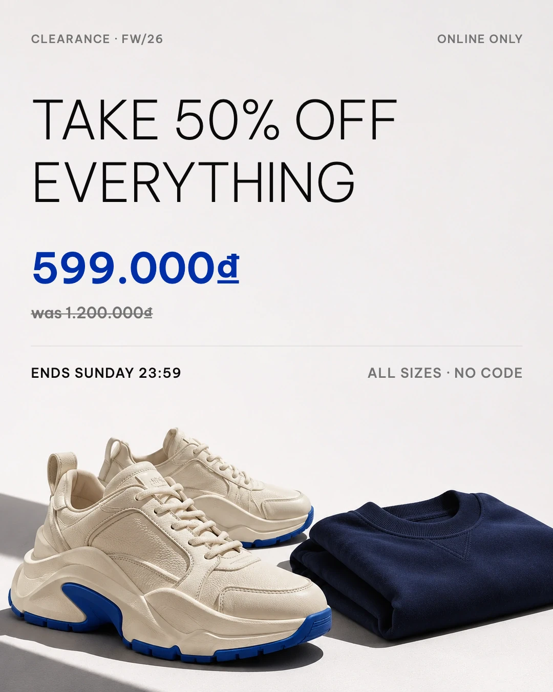
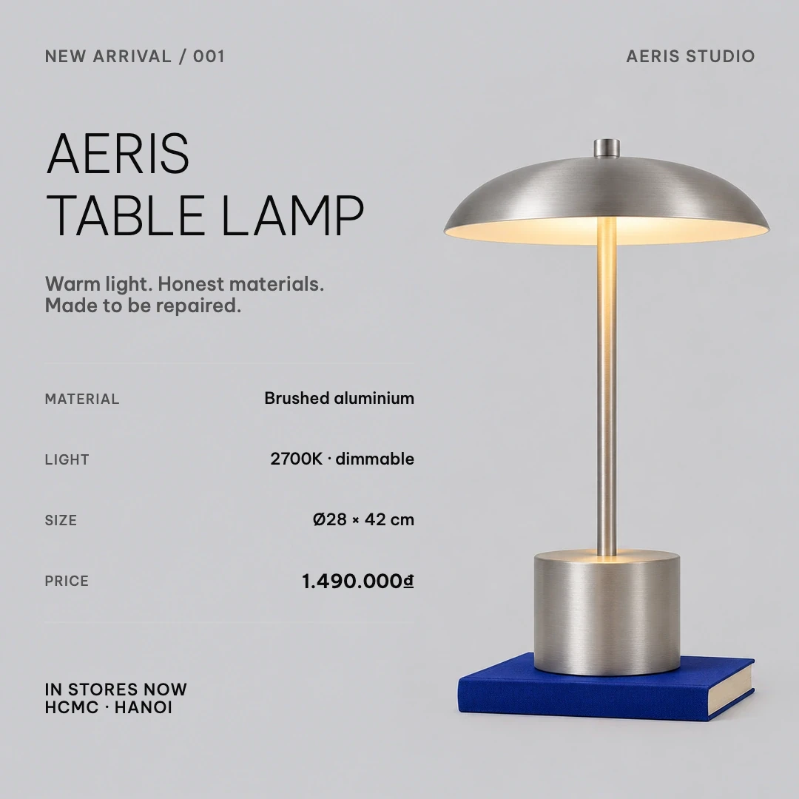
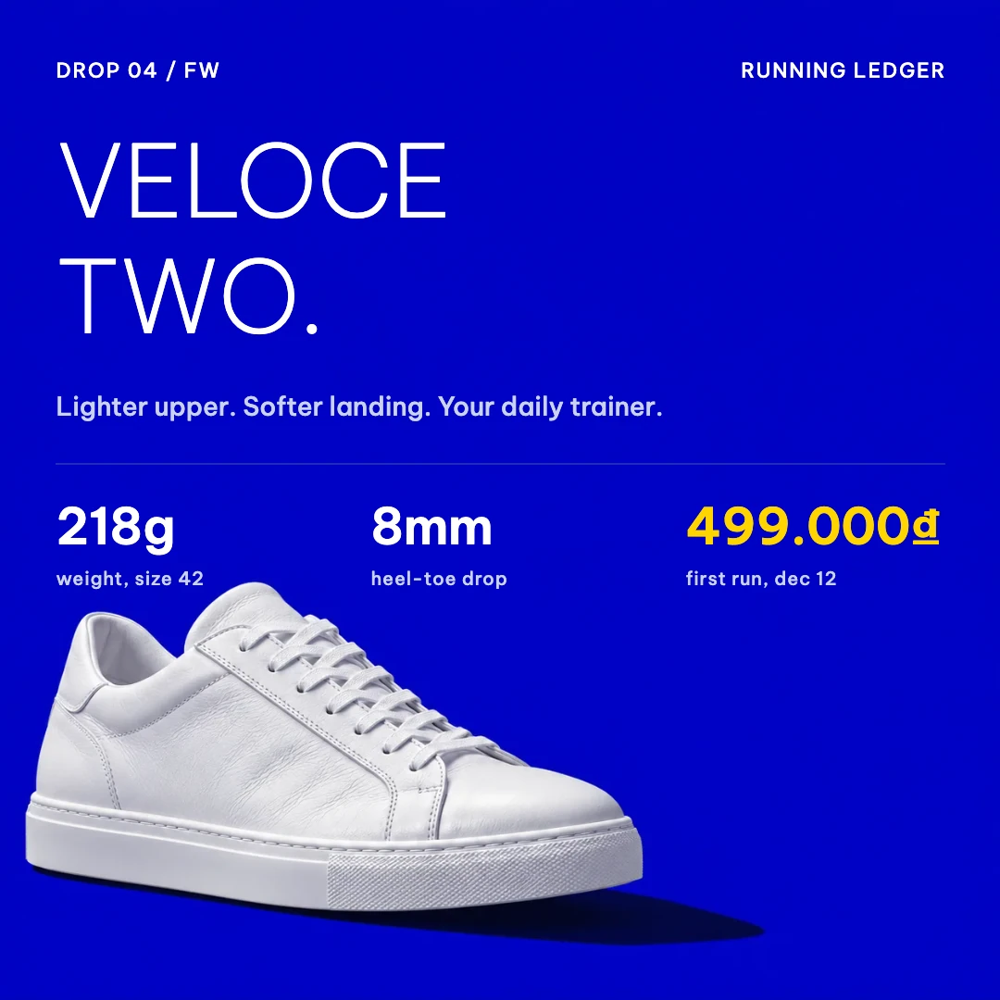
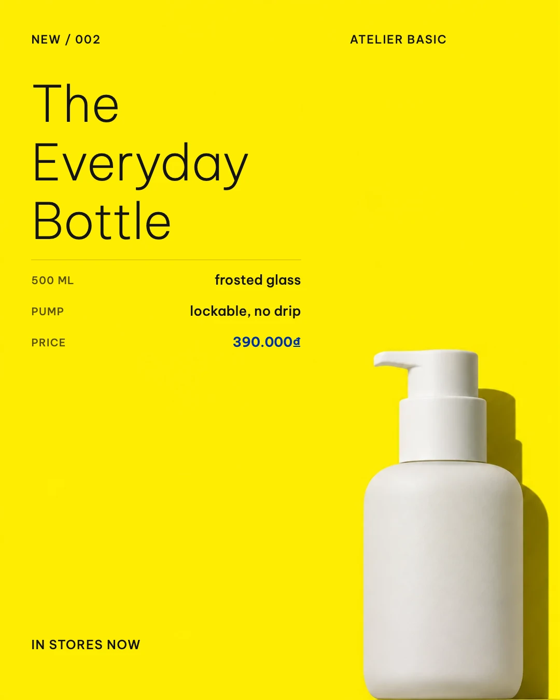

Clearance 50% · Swiss
1080 × 1350 · Native text layers · real image artwork
The bundled library · v0.6.1
7 real editable scenes from the Swiss collection, bundled with Oia v0.6.1. Choose a composition, change the copy, and export.

1080 × 1350 · Native text layers · real image artwork

1080 × 1080 · Native text layers · real image artwork

1600 × 900 · Native text layers · real image artwork

1080 × 1080 · Native text layers · real image artwork

1080 × 1350 · Native text layers · real image artwork
1080 × 1350 · Native text layers · real image artwork

1080 × 1080 · Native text layers · real image artwork
No. The artwork ships with Oia. Opening a template, changing native text, arranging layers and exporting use no AI quota. Requesting new AI artwork uses your provider quota.
Yes. Each preview is rendered from the bundled scene using the same Fabric canvas engine as the desktop app. The gallery shows complete compositions, not cropped stock photos. Photographic backgrounds are AI-generated; copy remains native text.
Yes. Use Share ▸ Publish as template in the editor to keep a reusable scene in your own library.